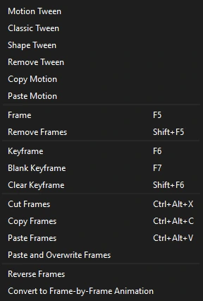

Workspace
The workspace
Phoenix keeps the stage in the middle and everything that acts on it around the edges. This page names each area and the panels you can open.

- Menu bar: File, Edit, Insert, Modify, View, Control and Help.
- Toolbox: drawing and editing tools, the stroke and fill colors, and the Object Drawing switch.
- Outliner: the document as a tree, from scenes and layers down to individual shapes.
- Edit bar: where you are in the document (the scene, and any symbol you have opened), with a Back button and the Edit Symbols list.
- Stage: the visible area of your animation, on a gray pasteboard where you can park artwork off screen.
- Timeline header: the current frame, frame rate and time, the playback controls, onion skinning and looping.
- Layers: the layer stack, with visibility, lock and outline controls.
- Frame grid: the frames of every layer over time.
- Panel dock: Properties, Library, Color and Swatches as tabs, with room for more panels.
The toolbox
The toolbox is a single column on the left. Related tools share a slot: a small corner mark on a button means there is more than one tool in it. Press and hold the button to see the others, and the one you pick takes over the slot. Every tool's shortcut key works even while its tool is hidden in a slot.

Below the tools are:
- The stroke and fill color swatches. Click one to choose a color, including its transparency.
- Black and white, which resets to a black stroke and white fill.
- Swap colors, which exchanges the stroke and fill colors.
- Object Drawing (J), which decides whether new shapes merge with what is under them. See Merge and object drawing.
Hold Ctrl with any tool to use the Selection tool for a moment. See Drawing tools for every tool and its options.
The Properties panel
The Properties panel shows settings for whatever you are working on. It has four tabs, and Phoenix switches between them for you:
- Tool
- Options for the current tool, plus the fill and stroke it will draw with. Shown when you pick a tool.
- Object
- Position, size, color and effects of the selection. Shown when you select something on the stage.
- Frame
- The label, tween, ease and sound of the frame under the playhead. Shown when you click in the frame grid.
- Doc
- Stage size, frame rate and stage color. Shown when nothing is selected with the Selection tool.


Hot text
Underlined numbers in the panels are hot text. Drag across one to scrub its value, or click it to type a new value.
| Do this | To |
|---|---|
| Drag left or right | Scrub the value |
| Shift while dragging | Change it ten times faster |
| Ctrl while dragging | Change it in tenths, for fine adjustment |
| Click, type, Enter | Enter an exact value |
| Esc while typing | Cancel and keep the old value |
Every change made in the Properties panel is a single step you can undo.
Other panels
Phoenix has no Window menu; panels open from the View menu.
| Panel | Opens with | Use it to |
|---|---|---|
| Library | Tab beside Properties | Browse and organize symbols, bitmaps and sounds |
| Color | Ctrl+Shift+F9 | Choose solid, gradient and bitmap fills |
| Swatches | Ctrl+F9 | Pick from the document's saved colors |
| Align | Ctrl+K | Line up, distribute, match sizes and space objects |
| Transform | Ctrl+T | Scale, rotate and skew by exact amounts |
| Info | Ctrl+I | Read the size, position, cursor position and color under the cursor |
| Frame Picker | View menu | Choose which frame a graphic symbol shows, from thumbnails |
| Motion Editor | View menu | Edit a motion tween's property curves |
| Motion Presets | View menu | Save and apply reusable motion |
| Outliner | Ctrl+Alt+O | Show or hide the document tree |

Arranging panels
Panels are docked windows. Drag a panel by its title bar to move it to another edge or onto another panel to make a tab group, or click the float button in its title bar to give it a window of its own. Phoenix remembers the layout between sessions.
The outliner can be hidden to give the stage more room: use the fold arrow at the left of the edit bar, , or drag its edge. Its visibility and width are remembered too.
Save named workspaces and switch between them under . Every panel has a toggle in the menu, and (Ctrl+F10) lists the steps you can undo.
Find and Replace
Choose (Ctrl+F) to search the whole document, every scene and every symbol, for Text (with Match case and Whole word), a Font, a Color (in fills, strokes, gradients and text), a Symbol's instances, a Sound on the keyframes that play it, or a Bitmap in its instances and bitmap fills. Find All lists where each is; click one to go there. Replace All changes them all as one step you can undo.
Movie Explorer
(Alt+F3) shows the whole document as a tree: each scene's layers, their keyframes with labels, scripts and sounds, and what is on them, with symbol instances by symbol and instance name and text by what it says. Symbol Definitions lists every symbol's own contents the same way. The buttons above choose what is listed: Text, Symbols, Scripts, Media (bitmaps and sounds) and Frames (layers and labeled frames with nothing else shown). Type in the search box to narrow it to names and text that match. Click an entry to go to it on the stage. The ☰ menu has Show in Library, Expand All, Collapse All and Copy All Text to Clipboard.
The outliner
The outliner shows the whole document as a tree: scenes, layers, frames, and the elements on them, down to individual paths and edges in a shape. Select something in the outliner and it is selected on the stage too. It is a quick way to find a small or hidden element in a crowded scene.
The status bar
The bar along the bottom of the window shows how many objects are selected, confirms saves and exports, and shows the progress of an update download.
Context menus
Right-click almost anywhere for the commands that apply there:
- On the stage: cut, copy and paste; arrange; transform; distribute to layers; convert to symbol; edit, edit in place or swap a symbol; break apart; group and ungroup.
- On a layer: insert and delete layers and folders, guide and mask types, show and lock others, and layer properties.
- On frames: tweens, frames and keyframes, cut, copy and paste frames, reverse frames, and copy and paste motion.
- In the Library: rename, duplicate, delete and new folder.

